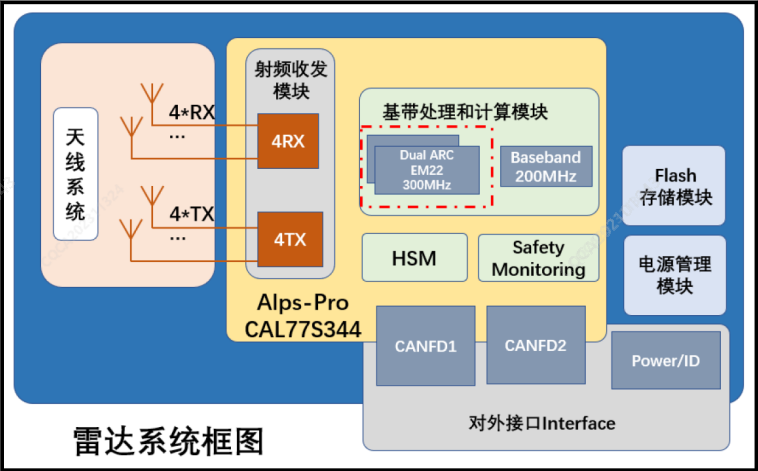

角雷达兼顾了低速泊车场景和高速 ADAS 场景，可实现点云(Pointclouds)输出、自由空间(FreeSpace)检测 、护栏(Grandrai1)检测、运 动目标跟踪检测(Tracker)等感知功能。

侧向毫米波雷达系统作为驾驶辅助功能的传感器之一，主要功能如下： 输出自车前方/侧方被雷达有效识别到的运动目标，包括小车、大车、二轮车、行人等；输出自车前方/侧方被雷达有效识别到的静止障碍物的 Freespace（可行驶边界），如墙面、柱子、水马、锥筒、静止车辆等的边界；输出自车前方/侧方被雷达有效识别到的金属护栏信息